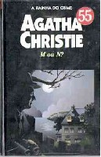

M ou N?
N or M?
Um agente é friamente assassinado na Escócia depois de descobrir indícios de atividade nazista na Inglaterra no início da Segunda Guerra Mundial. Suas últimas palavras: “M ou N”. Com as missão de colaborar com o Serviço Secreto inglês, os jovens aventureiros Tommy e Tuppence seguem para a Escócia e se hospedam na pensão Sans Souci. A princípio, senhoras tricotando em cadeiras de balanço e homens que só falam de negócios não parecem ter qualquer relação com o crime. Mas essa é a única pista para solucionar a intrincada trama de crime e espionagem. E eles precisam decifrar o mistério antes que o assassino volte a agir.